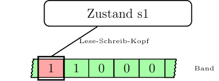

Die Berechenbarkeitstheorie beschäftigt sich mit der Frage, welche Probleme du mit Algorithmen lösen kannst und wo die Grenzen dieser Lösbarkeit liegen. Diese Grenzen können technischer oder theoretischer Natur sein.
Technische Grenzen der Berechenbarkeit ergeben sich aus den praktischen Einschränkungen von Rechenmaschinen, etwa Speicherplatz und Rechenzeit. Selbst wenn ein Problem theoretisch berechenbar ist, kann es praktisch unlösbar sein, wenn die benötigten Ressourcen die Kapazitäten heutiger oder vorstellbarer Computer übersteigen.
Theoretische Grenzen betreffen die grundsätzliche Berechenbarkeit von Problemen, unabhängig von der verfügbaren Technik. Dabei spielen Entscheidungsprobleme und das Halteproblem eine wichtige Rolle.
Um zu beweisen, dass ein Problem von keinem Algorithmus gelöst werden kann, braucht man eine genaue Definition von „Algorithmus“. Alan Turing beschrieb 1936 dafür ein einfaches mathematisches Maschinenmodell, die Turingmaschine (siehe Hinweis unten). Etwa gleichzeitig entwickelte Alonzo Church mit dem Lambda-Kalkül ein ganz anderes Modell – und beide Modelle erwiesen sich als gleich mächtig.
Ein Entscheidungsproblem ist eine Fragestellung, die für jede Eingabe mit Ja oder Nein beantwortet wird. Ein klassisches Beispiel ist die Frage, ob eine gegebene Zahl eine Primzahl ist. Ein Entscheidungsproblem heißt entscheidbar, wenn es einen Algorithmus gibt, der für jede Eingabe nach endlich vielen Schritten die richtige Antwort liefert.
Das Halteproblem ist ein spezielles Entscheidungsproblem. Es fragt, ob ein gegebenes Programm bei einer bestimmten Eingabe irgendwann anhält oder unendlich weiterläuft. Alan Turing bewies, dass es keinen Algorithmus geben kann, der diese Frage für jedes beliebige Programm korrekt beantwortet. Wegen der Churchschen These gilt das nicht nur für Turingmaschinen, sondern für jedes denkbare Verfahren. Das zeigt eine grundsätzliche Grenze dessen auf, was mit Algorithmen entschieden werden kann.
P steht für die Klasse der Entscheidungsprobleme, die sich effizient (in polynomialer Zeit) mit einer deterministischen Turingmaschine lösen lassen. NP umfasst Entscheidungsprobleme, bei denen sich eine vorgeschlagene Lösung effizient überprüfen lässt, auch wenn man nicht unbedingt weiß, wie man sie effizient findet (der Name kommt von „nichtdeterministisch polynomiell“).
Die Frage, ob P = NP gilt, ist eines der großen ungelösten Probleme der Informatik. Sie hat weitreichende Folgen für die Sicherheit von Verschlüsselungsverfahren und die Effizienz von Algorithmen.
Beispiel für ein P-Problem: „Ist diese Liste aufsteigend sortiert?“ lässt sich mit einem Durchlauf in O(n) entscheiden. Auch das Sortieren selbst gelingt in polynomialer Zeit, zum Beispiel mit Mergesort in O(n · log n). Streng genommen gehören zur Klasse P aber nur Ja-/Nein-Fragen.
Beispiel für ein NP-Problem: Das Problem des Handlungsreisenden (Travelling Salesman Problem, TSP) in seiner Entscheidungsvariante lautet: „Gibt es eine Rundreise durch alle Städte, die kürzer als k Kilometer ist?“ Wird eine Rundreise vorgeschlagen, lässt sich schnell prüfen, ob sie alle Städte besucht und kürzer als k ist: Man addiert die n Teilstrecken. Eine solche Rundreise zu finden, ist dagegen extrem aufwendig, wenn die Anzahl der Städte groß ist. Die Frage „Ist diese Route die kürzeste?“ lässt sich dagegen nicht einfach überprüfen – dafür müsste man sie mit allen anderen Routen vergleichen.

Hier stand eine Abbildung, deren Nutzungsrechte für die Webseite nicht geklärt sind.
Die Untersuchung der Frage „P = NP?“ ist grundlegend für das Verständnis der Grenzen von Algorithmen und Computern. Sie hilft zu bestimmen, welche Probleme effizient lösbar sind, und hat praktische Auswirkungen in vielen Bereichen wie Kryptographie, Netzwerkdesign und künstlicher Intelligenz. Ein Beweis von P = NP würde zu Algorithmen führen, die heute als praktisch unlösbar geltende Probleme effizient lösen – und damit auch viele heutige Verschlüsselungsverfahren unsicher machen.
Alltag: Dass Online-Banking sicher ist, beruht darauf, dass bestimmte Probleme (etwa das Zerlegen sehr großer Zahlen in Primfaktoren) mit heutiger Technik praktisch nicht lösbar sind.
Beruf: Wegen des Halteproblems kann kein Werkzeug alle Fehler eines Programms automatisch finden. Entwicklerinnen und Entwickler von Analysewerkzeugen (z. B. für sicherheitskritische Software in der Automobil- oder Luftfahrtindustrie) arbeiten deshalb mit Näherungen: Ihre Werkzeuge melden „möglicherweise fehlerhaft“, und Menschen prüfen nach. In der Planung von Schichtdienstplänen oder Stundenplänen (z. B. für Schulen) setzen Softwarefirmen Heuristiken ein, weil das exakte Optimum zu aufwendig wäre.
Praktische Lösbarkeit: Ob ein Problem praktisch lösbar ist, hängt nicht nur von seiner theoretischen Lösbarkeit ab, sondern vor allem vom Wachstum des Aufwands (Komplexität) und von den verfügbaren Rechenressourcen.
Theoretische Grenzen: Es gibt Probleme, die prinzipiell kein Algorithmus lösen kann, unabhängig von der Rechenleistung. Das bekannteste unentscheidbare Problem ist das Halteproblem.
Churchsche These: Alles, was sich überhaupt durch ein Verfahren Schritt für Schritt berechnen lässt, kann auch eine Turingmaschine berechnen. Die These ist nicht beweisbar, weil „intuitiv berechenbar“ kein mathematisch definierter Begriff ist.
P: Probleme, die ein Algorithmus in polynomialer Zeit O(nk) löst. Sie gelten als praktisch lösbar.
NP: Probleme, bei denen sich eine vorgeschlagene Lösung in polynomialer Zeit überprüfen lässt. Jedes Problem aus P liegt auch in NP; NP heißt also nicht, dass es keinen schnellen Lösungsweg gibt.
Eine Rundreise durch die Städte Dresden (D), Leipzig (L), Chemnitz (C) und Zwickau (Z) wird vorgeschlagen: D → L → Z → C → D mit den (gerundeten) Teilstrecken 115 km, 80 km, 40 km und 80 km. Prüfe, ob sie die Entscheidungsfrage „Gibt es eine Rundreise kürzer als 330 km?“ mit Ja beantwortet. Erläutere, warum dir diese Prüfung nicht verrät, ob es die kürzeste Rundreise ist.